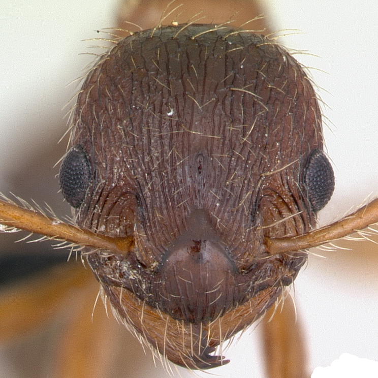
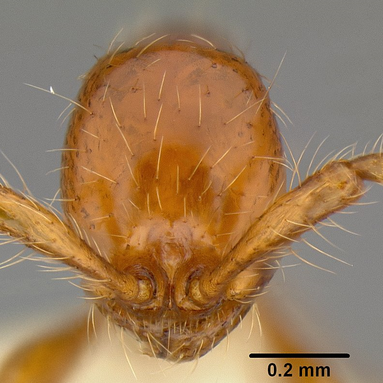
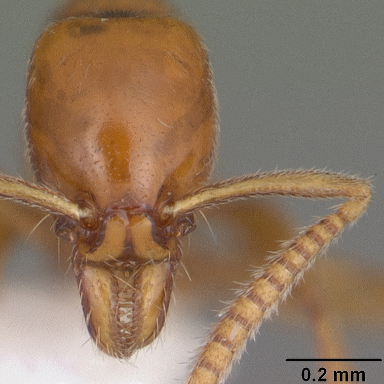
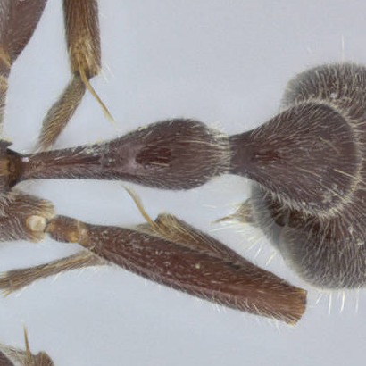

 AntWeb " style="cursor:help;">(Cly) " style="cursor:help;">(∆fr) " style="cursor:help;">(frc) " style="cursor:help;">(∆fr) " style="cursor:help;">Cly " style="cursor:help;">PE " style="cursor:help;">PPE : PN, " style="cursor:help;">MN, Pp Crematogastrini Dacetini Formicoxenini Melissotarsini Myrmicini Pheidolini Solenopsidini Stenammini Tetramoriini  AntWeb " style="cursor:help;">(Cly) " style="cursor:help;">(∆fr) " style="cursor:help;">PE " style="cursor:help;">PPE Pronotum (PN) " style="cursor:help;">(MN) Aenictus dlusskyi,lifuiae maroccanus,rhodiensis,vaucheri  AntWeb " style="cursor:help;">(Cly) " style="cursor:help;">(∆fr) " style="cursor:help;">Cly (Ppst) Anomalomyrma Leptanilla Protanilla Pseudomyrmicinae  AntWeb " style="cursor:help;">(Cly) " style="cursor:help;">(∆fr) " style="cursor:help;">PE " style="cursor:help;">PPE Pronotum (PN) " style="cursor:help;">(MN) :Tetraponera attenuata